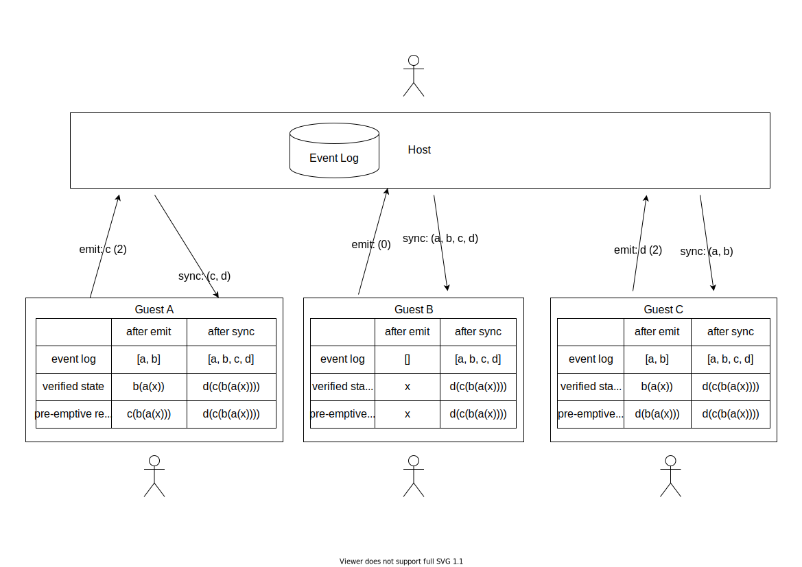

Peer Party
React hooks for connecting guests to a host via WebRTC.
@compendium/peer-party
Peer Party uses WebRTC and a common set of game rules to host and share a multiplayer game with freinds, all without the use of a server. Guest can emit valid game moves to the host and the host will broadcast what moves have been made by whom. All guests using the list of events generate their own local state by applying the deterministic move functions to a state. This prevents the host having to send large amounts of data to guests over the network, whilst maintaining a reactive experience and allowing guests the preempt the game state after making their move locally.



Install
npm install --save @compendium/peer-party
Usage
import React, { Component } from 'react'
import MyComponent from '@compendium/peer-party'
import '@compendium/peer-party/dist/index.css'
class Example extends Component {
render() {
return <MyComponent />
}
}
License
UNLICENSED © SmileyJames